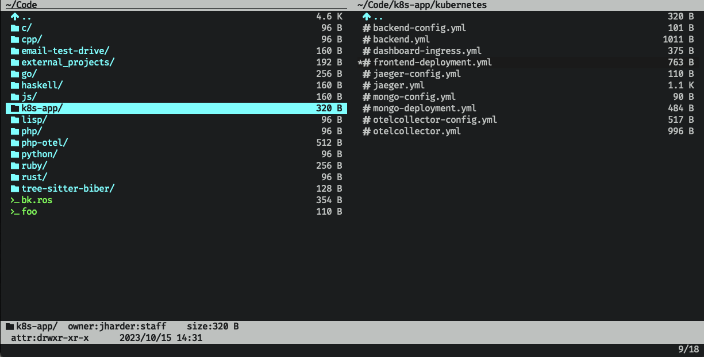
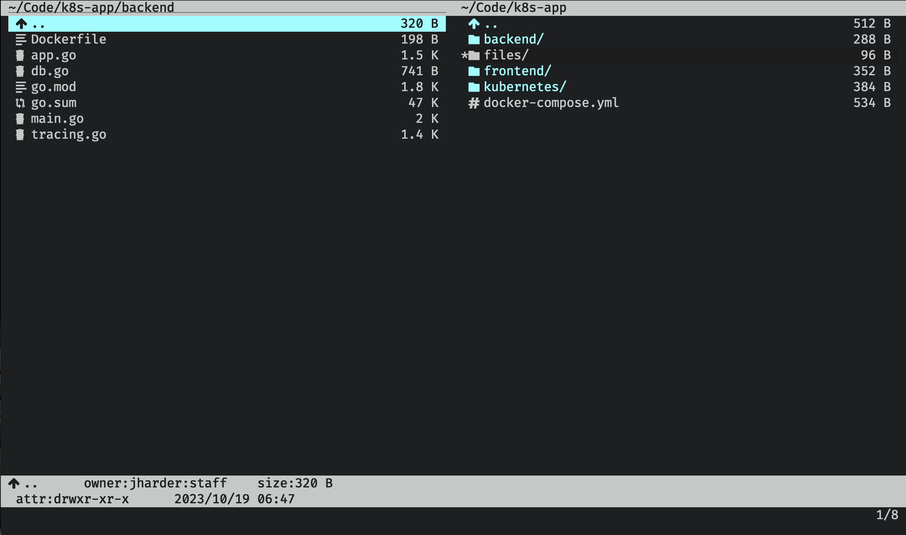
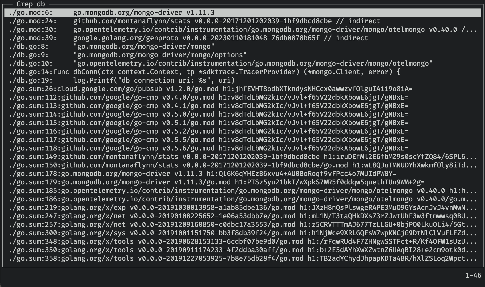
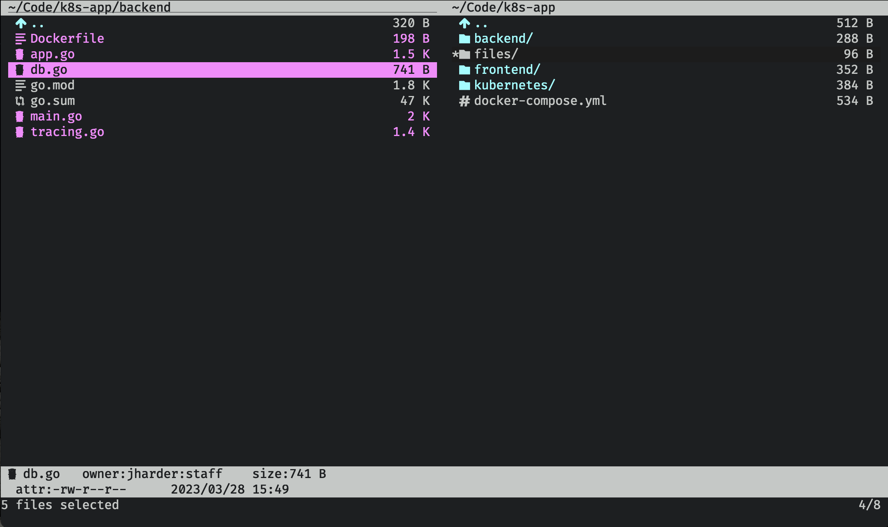
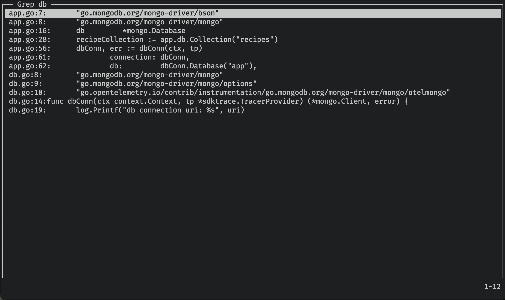

Vifm - Terminal Tooling
Vifm file_managers
Overview
Vifm is the vi file manager. It uses dual window design reminiscient of midnight commander, but attempts to replicate vi keybindings as much as possible.

NOTE: I have installed the catppuccin theme and the vim devicons plugin.
The emulation is so complete that I can confidently say, if you know how to use vi (or vim or neovim) you already know how to use vifm. Your intuition as to moving around, copying and pasting files, using marks, etc will guide you to the correct key or command.
For some of you, this might already be enough of a sell that you could close this tab, install vifm, and have some fun exploring its features. For the rest of you however, I'll dig into some of the unique features, quirks and pain points.
Basic features
As expected, all the basic navigation from vim works here. h, j, k and l move up, down, back and
forward through the directory tree. gg moves to the first item in the current directory,
G goes to the last. H, M, L move to the top, middle, and bottom of the visible window's contents.
You can rename, cut, copy, and delete files just like you would expect for a vim inspired file manager (just like in ranger). And bulk updates work the same way (using a temporary file which you edit in order to specify the desired changes)
Finding files
There are many commands you can execute by triggering ex mode (using :). However one notable one
that deserves some attention is :grep.
Consider the following situation: You're at the root of some project, and you want to find
all the files which contain the string db.

Execute :grep database, and a window will pop up with all the results recursively.

Hmmm… that certainly gave us all the results. But there's probably some files included
in the results that we don't care about, notably go.mod and go.sum.
Let's select those two files (using t), then invert the selection (using :invert s, for
invert selection)

Now running grep will limit its search to only the selected files.

Now that's much easier to work with. This window can be navigated with the same vim
bindings for regular navigation, and pressing (l or enter) on any of the lines will jump
into that file to the relevant line.
Marks
True to its vim inspiration, you can use marks to set temporary bookmarks you can jump back to later. The marks you set are ephemeral and are lost when you close vifm.
Marks can be made permanent by adding them to the configuration file. This is a great way to set easy access to common directories you work on frequently.
Speaking of configuration, vifm supports a huge number of configurable settings. It should be a surprise to no one that the syntax of its configuration file is the same as vim's.
Configuration
Stored in ~/.config/vifm/vifmrc, vifm's configuration comes pre-populated upon
installation with extensive commentary and default values for each setting.
You can change this file however you like, there are many like it, but this
one is yours.
For example, to add by default a mark for your home directory, add the following
line to your vifmrc:
mark h ~/
Now, any time you want to jump home in vifm, simply hit 'h.
To fully explore all the configuration settings would warrant a whole article of its own so I'll end the discussion here for now.
Conclusion
This is a shorter article is part because there is so much overlap with ranger, which received a fuller write up.
Vifm and ranger share many keybindings and a similar philosophy, so why would you choose one over the other? In my mind it depends on two things. 1.) Do you like miller columns1 or dual window displays? And 2.) do you like to customize your tools with a programming language (ranger uses python) or a simple declarative format like vifm's?
Additionally, though ranger utilizes many vim keybindings, only vifm can honestly claim "If you know vim, you know vifm". That's a pretty strong statement that I'm making on their behalf. This is perhaps the biggest sell, and it may just be the deciding factor for you.
There's no right or wrong here, but simply a matter of taste. Whichever you choose, you can rest assured that taking time to find the tool works for you will remove one source of friction in your workflow.
This also concludes the month of terminal file managers. Coming up next will be a series of articles reviewing basic POSIX tools and how to squeeze every last ounce of utility you can.
Footnotes:
Vifm technically supports miller columns as well using :set millerview but I struggled
to get it working nicely. I would say if you really want this design, ranger may be the better
choice for you.